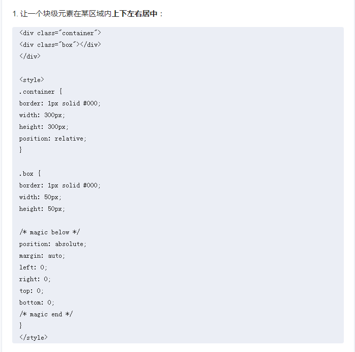

1.让一个块上下左右居中

2.如何给chrome console加样式
console.log('%c我%c爱%c你', 'font-size: 60px;color:red', 'font-size: 40px; color: blue', 'font-size: 20px; color: green');
3. 在Chrome浏览器的Elements里面选中某个元素，按h可以隐藏该元素
4.在Chrome的Sources里面的李阿敏，ctrl+o可以打开某个js脚本，并且可以修改它，修改的内容在不刷新的情况下是生效的。